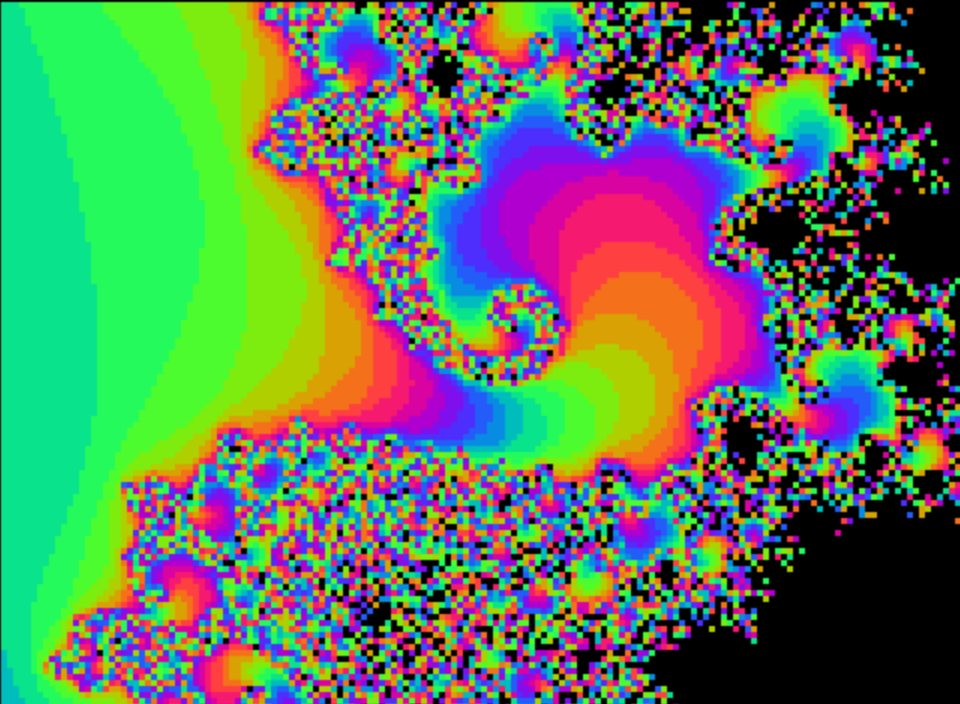
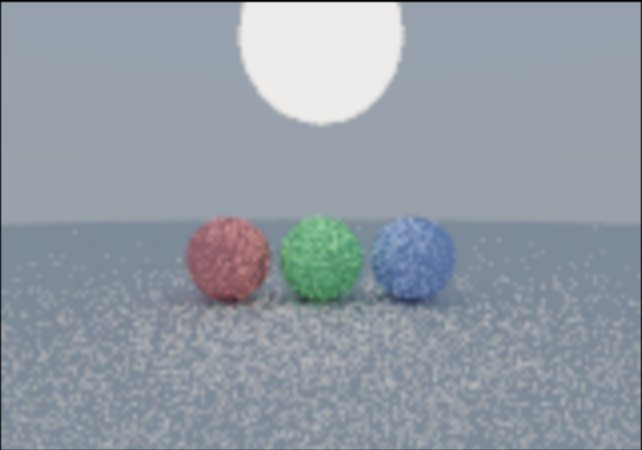
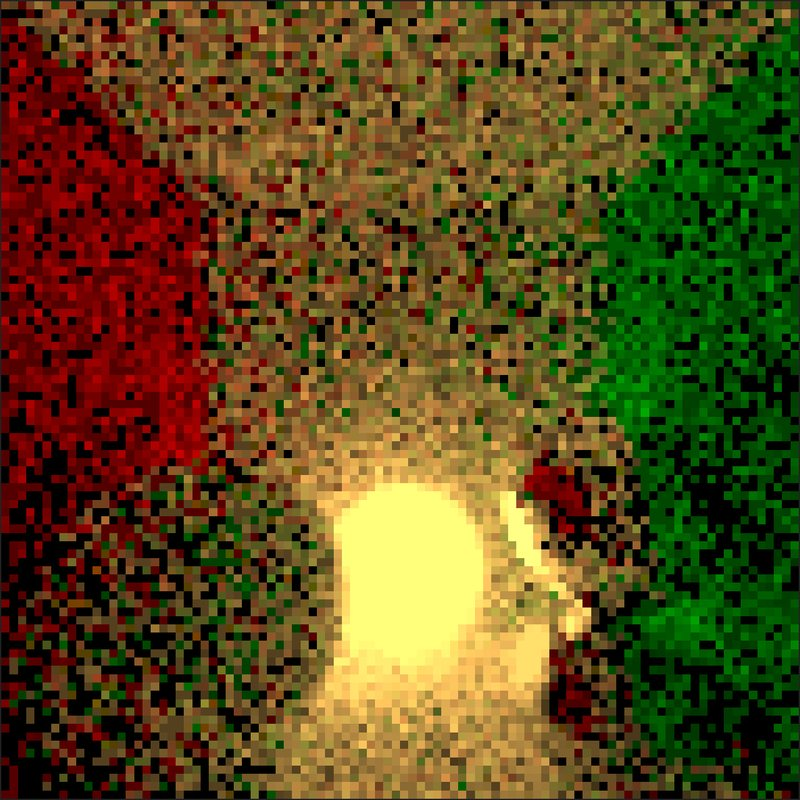
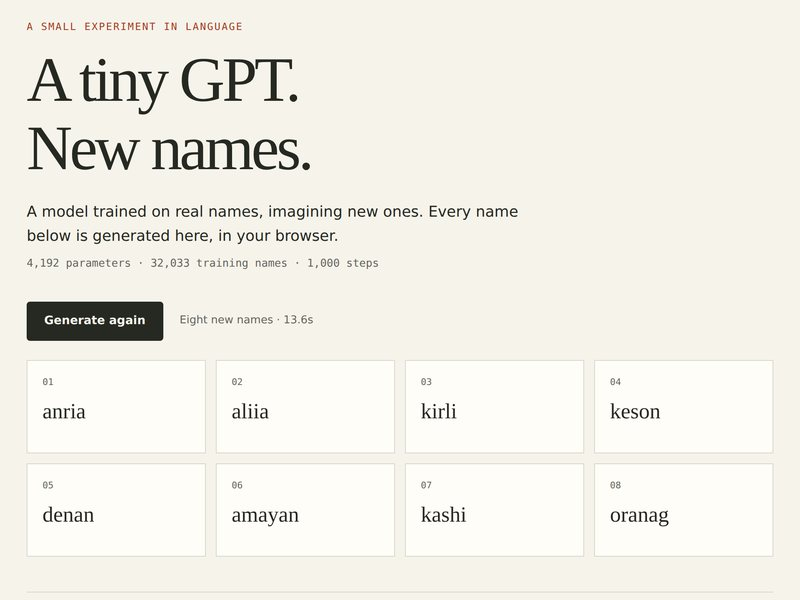
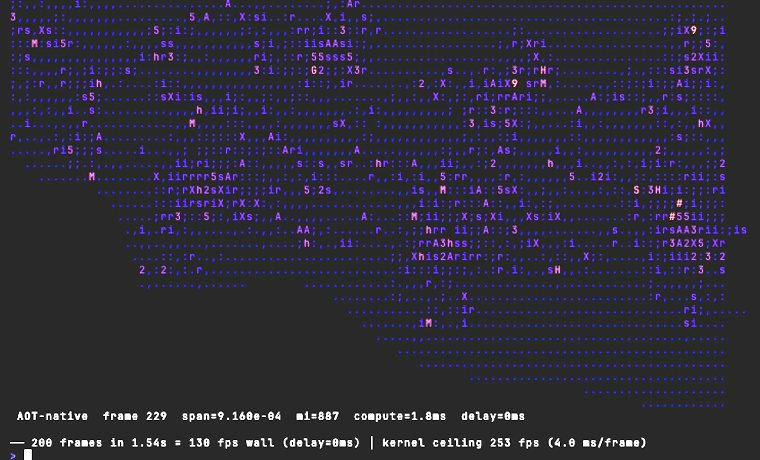

let-go lab
Lisp in the browser,
drawing pictures.
Experiments on let-go, a Clojure dialect
on a Go bytecode VM. Each demo below is a single .lg file compiled to
WebAssembly. It runs in your browser with no install, and the same file runs natively in a terminal.

mandelbrot live
Escape-time fractal as sixel graphics in xterm.js. Click to zoom, keys to pan, , . for detail.

pathtrace live
Monte Carlo path tracer that encodes its own PNGs. Orbit with hjkl.

ptcanvas live
Allocation-free path tracer drawing straight to a <canvas>.

microgpt live
Karpathy's scalar GPT in one let-go file, inventing names in your browser.

mandelbrot-aot native
The same kernel lowered to Go with lg compile: about 72× faster than the VM.
Serve any demo locally with just serve <demo>; mandelbrot and pathtrace also run in a terminal with just play <demo>.
The audio, AOT and microgpt training experiments live in the repo.